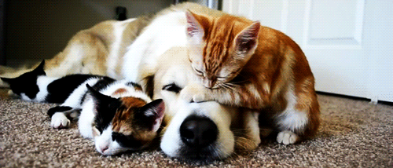

Pet Care

Discover the Ultimate Pet Care Experience

Flexibility
Set drop-off and pick-up times according to your schedule. Choose from flexible plans, including extended stays for vacations or short visits for day-to-day commitments. You're in control of your pet's schedule.

Convenience
Some services offer pick-up and drop-off, and you can easily find sitters in your neighborhood. Take advantage of additional services such as grooming and veterinary appointments that can be coordinated with your pet's stay, saving you time and effort.

Peace of Mind
Most services provide insurance coverage for potential damages or theft. Additionally, enjoy features like live-streaming cameras in the facility, allowing you to check on your pet whenever you want and ensuring transparency in their care.

One-on-One Attention
Your pet gets undivided love and freedom to roam in a happy, loving home. Some services offer exclusive attention from a dedicated pet sitter, ensuring your pet forms a strong bond with their caregiver.

Familiarity & Consistency
Build trust with a preferred sitter for a home away from home. Many services provide detailed profiles of their sitters, allowing you to choose someone whose values align with your pet care preferences, creating a familiar environment.

Personalized Service
Beyond walks, sitters handle feeding, playtime, medication, and more. Customize your pet's experience with additional services like specialized diets, specific exercise routines, or even unique activities tailored to your pet's preferences.